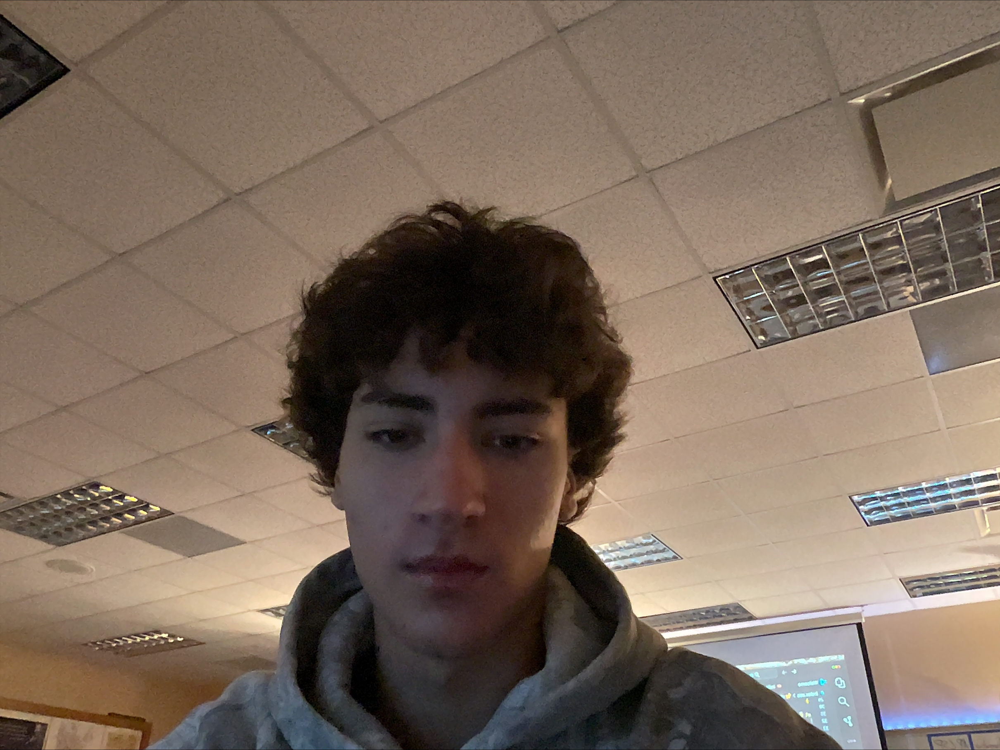

Introduction
This is my website where I am going to use what I have learned in class to create a page all about myself.
About
Hello, my name is Vishal Lowe. I am currently a Junior at Fishers high school. I have one sibling which is my older brother. Over the summer I went to Chicago to visit my family and I also hung out with my friends. I am not set on one career I want to be in for the future but I do have interests like sports, movies, and finding new fun activities to do.

Projects
Project 1
 Project link
Project link
This was a project for my IB Global Politics class where we were given a nation that is not yet sovereign and we had to present what requirements of sovereignty they have not met in order to gain it. For this we were given Scotland. I choose this project specifically because I thought me and my group did well with it and I was proud of the overall look and information that we had gathered through our research and the effort we put into it.
Project 2
 Project link
Project link
This was project I made last year in my art class. Our class went outside to gather materials from outside to use for the project. I am proud of this because I made it myself and I was proud of the final product that come from all of the work that i put into it.
Layout provided by Bootstrap